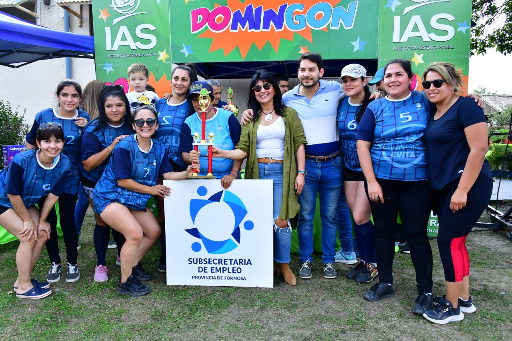

Funciones del IAS
El Instituto de Asistencia Social actúa como ente de control de los juegos de azar de la provincia. Su rol abarca tanto la regulación legal de la actividad como la fiscalización permanente de los operadores habilitados, garantizando el cumplimiento de la normativa vigente y velando por los intereses de la ciudadanía.
-
Regulación y control de juegos de azar en la provincia
El IAS establece las normas que rigen el funcionamiento de todos los juegos de azar en la provincia, garantizando que la actividad se desarrolle dentro del marco legal vigente.
-
Fiscalización de salas de juego y casinos
Realiza inspecciones periódicas y controles operativos en los establecimientos habilitados para asegurar el cumplimiento de las condiciones técnicas, legales y de seguridad exigidas.
-
Otorgamiento de licencias y habilitaciones
Evalúa y aprueba las solicitudes de empresas y operadores que deseen desarrollar actividades de juego en la provincia, verificando el cumplimiento de todos los requisitos exigidos.
-
Programas de juego responsable
Diseña e implementa campañas de concientización y programas de asistencia dirigidos a jugadores con conductas problemáticas, trabajando en conjunto con el sistema de salud provincial.
-
Destino de fondos para programas sociales
Administra la distribución de los fondos recaudados por la actividad del juego, destinándolos a programas de educación, salud, infraestructura y asistencia social en toda la provincia.

Compromiso con la Responsabilidad Social
- Prevención de la ludopatía: Desarrollar políticas activas de prevención, detección temprana y asistencia para personas con conductas adictivas relacionadas al juego.
- Promoción del juego responsable: Fomentar en toda la ciudadanía hábitos de juego controlado, dentro de las posibilidades de cada persona y con plena conciencia de los riesgos asociados.
- Protección de menores: Garantizar el cumplimiento estricto de la prohibición de acceso de menores de edad a los establecimientos de juego y a cualquier modalidad de juego regulada.
- Apoyo a programas comunitarios: Destinar una parte significativa de la recaudación a financiar programas sociales, educativos y de salud que beneficien directamente a la comunidad.
- Transparencia en la gestión: Publicar periódicamente informes de recaudación, distribución de fondos y resultados de las inspecciones, garantizando el acceso a la información pública.